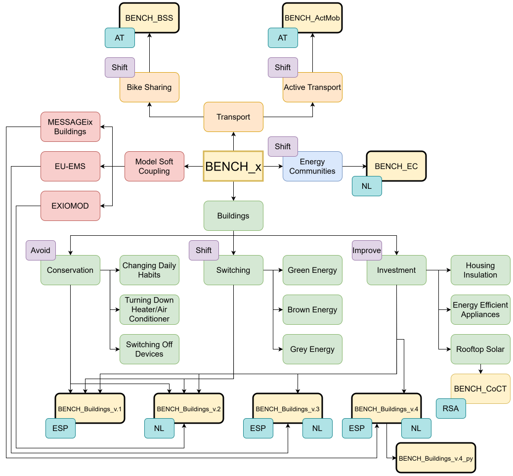

Behavioral change in ENergy Consumption of Households
A family of agent-based models studying how individual behaviour, social dynamics, and policy interact to shape energy consumption and carbon emissions at household and urban scales. Click any active model in the diagram to download the code or view the associated publication.
Want to explore how BENCH v.4 behaves? Try the interactive demo → — adjust behavioral thresholds and see the impact on renovation rates over time.
Click a highlighted model node to download code or view its paper.

| Model | Language | Publication | Download |
|---|---|---|---|
| BENCH_v.1 | NetLogo | Transition to low-carbon economy: Assessing cumulative impacts of individual behavioral changes (2018) | — |
| BENCH_v.2 | NetLogo | Assessing the macroeconomic impacts of individual behavioral changes on carbon emissions (2020) | Download |
| BENCH_v.3 | NetLogo | Economy-wide impacts of behavioral climate change mitigation: Linking agent-based and computable general equilibrium models (2020) | Download |
| BENCH_BSS | Python (Mesa) | Modelling bike-sharing service adoption in urban areas: a case study of Vienna (2024) | Download |
| BENCH_v.4 | NetLogo | Energizing building renovation: Unraveling the dynamic interplay of building stock evolution, individual behaviour, and social norms (2024) | Download |
| BENCH_ActMob | Python (Mesa) | Urban Strategies for Active Mobility in Vienna (2026) | Download |
| BENCH_v.4_py | Python | — | GitHub |
| BENCH_EC | AnyLogic | Quantifying the potential of energy communities in renewable electricity generation in The Netherlands (2026) | GitHub |